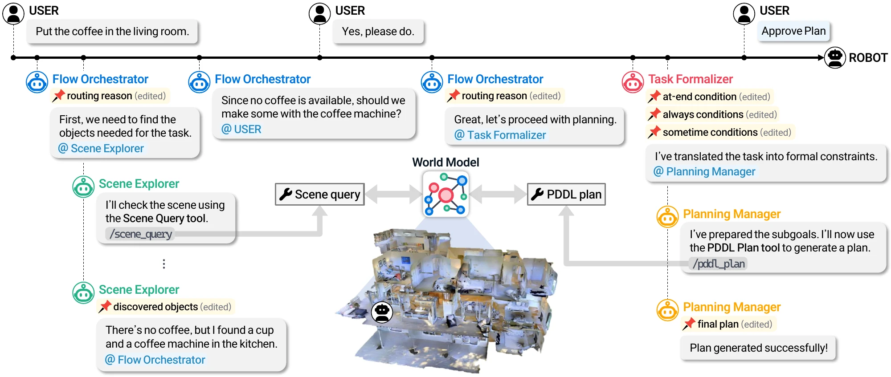
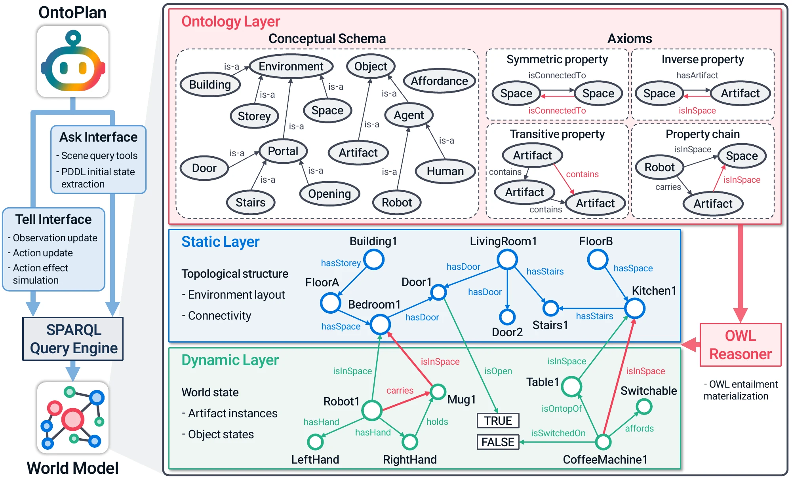
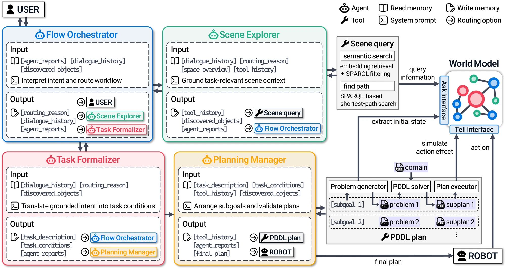

From an instruction to an executable plan
- LLM agents plan over an ontology-grounded world model whose classes and properties map one-to-one to a PDDL domain, so grounding, goals, and planning share one vocabulary.
- They query only the task-relevant part of the scene and hand formalized goals and constraints to a symbolic planner, so returned plans are executable.
- On 150 long-horizon tasks in five buildings at three scales: 0.89 task success vs. 0.27 for the strongest baseline, with 5.6× fewer tokens, and cost stays nearly flat as scenes grow 10–23×.

The Flow Orchestrator routes grounding, clarification, task formalization, and planning across specialized agents, while the Scene query and PDDL plan tools operate over a shared ontology-grounded world model.
Read the abstract
Large language model (LLM)-based robot task planning is promising for open-ended instruction following, but degrades on long-horizon tasks in large environments. When spatial information is conveyed to the LLM through text, the model can fail to capture spatial context, and token cost grows with environment size. Generating action sequences directly with an LLM also makes it difficult to satisfy the current world state and action preconditions.
We address this with an ontology-grounded scene representation that aligns objects, spaces, relations, and states in a shared symbolic vocabulary for spatial reasoning and task planning, and with OntoPlan, an agentic framework that interprets instructions, selectively retrieves task-relevant information, formalizes goals and constraints, and produces executable plans.
Across 150 general tasks spanning five indoor environments and three scene scales, OntoPlan achieves 0.89 average task success, compared with 0.27 for the strongest baseline, while using 18.1k total tokens per task on average, about 5.6× fewer than the most efficient baseline. These advantages persist as scene scale increases, whereas prior methods degrade more sharply in success and remain far more costly in tokens. OntoPlan also responds appropriately to ambiguous or infeasible instructions by asking follow-up questions or reporting insufficient information rather than committing to invalid plans.
Higher success at a fraction of the token cost
One symbolic state for grounding and planning
The world model has three layers: an ontology layer declaring entity types and relation semantics, a static layer storing topology and connectivity, and a dynamic layer storing object instances, states, and spatial relations. Access goes through an ask/tell interface. Ask runs read-only SPARQL queries for scene inspection and planner-state extraction. Tell inserts and deletes RDF triples for observations and action effects, and GraphDB materializes the resulting OWL 2 RL entailments.

World model. Ask supports scene inspection and planner-state extraction; tell updates dynamic facts from symbolic observations and action effects, and GraphDB materializes the OWL 2 RL entailments. The Marstons Medium scene has 2,908 asserted triples and 19,394 after reasoning.
One vocabulary from the world model to the planner
:isInsideOf a owl:ObjectProperty , owl:TransitiveProperty ; rdfs:domain :Artifact ; rdfs:range :Artifact . # dynamic layer fact :toothbrush_213 :isInsideOf :storage_cabinet_55 .
(:types ... Artifact) (:predicates (isInsideOf ?x - Artifact ?c - Artifact) ...) ; extracted initial state (isInsideOf toothbrush_213 storage_cabinet_55)
Ontology classes map one-to-one to PDDL types, and ontology properties map one-to-one to predicates with the same names. Grounding, task formalization, and planning share one vocabulary, so no schema translation sits between them.
Four roles, two tools, shared memory
OntoPlan splits the planning loop into workflow control, scene grounding, task formalization, and executable planning. Shared memory holds the current intent, grounding evidence, open ambiguities, formalized goals and constraints, and planner diagnostics, so any agent can revise an intermediate result as planning proceeds.

Watch OntoPlan solve a task
Four runs from the evaluation, replayed step by step: the agents' messages as logged, the conditions and subgoals they produced, and the plan executed on the Klickitat scene graph. Nothing here is regenerated; every message and action comes from the run's result file.
The purple marker is the robot and its trail is the executed path; orange squares are objects being carried or put down, and a red cross marks a place an always condition forbids. In the first run the Flow Orchestrator asks which couch to use and receives the fixed automatic reply used in the non-interactive evaluation.
Success holds and token cost stays flat as scenes grow
From Small to Large, object counts grow from 50–121 to 954–1,269 per environment. OntoPlan keeps the highest rate on every metric at every scale, while SayPlan shows heavier token tails and DELTA remains far more token-intensive.
Per-environment results (table)
Rates are averaged over the three scales; tokens are ×10³. All methods use GPT-4o at temperature 0 and are scored against the same at_end, always, sometime, and ordering checks.
| Environment | Method | Plan Returned | Plan Executable | Goal Reached | Task Success | Input tokens per call | Total tokens per task |
|---|---|---|---|---|---|---|---|
| Klickitat | SayPlan | 0.67 | 0.47 | 0.33 | 0.27 | 30.9 | 221.7 |
| DELTA | 0.63 | 0.23 | 0.23 | 0.20 | 23.9 | 101.3 | |
| OntoPlan | 1.00 | 1.00 | 0.93 | 0.90 | 2.6 | 17.3 | |
| Lakeville | SayPlan | 0.57 | 0.40 | 0.33 | 0.33 | 33.3 | 205.5 |
| DELTA | 0.47 | 0.23 | 0.17 | 0.17 | 23.4 | 98.8 | |
| OntoPlan | 1.00 | 1.00 | 0.97 | 0.97 | 2.6 | 18.8 | |
| Lindenwood | SayPlan | 0.63 | 0.47 | 0.40 | 0.40 | 34.5 | 206.6 |
| DELTA | 0.37 | 0.17 | 0.23 | 0.17 | 23.4 | 98.9 | |
| OntoPlan | 1.00 | 1.00 | 0.87 | 0.87 | 2.6 | 17.5 | |
| Marstons | SayPlan | 0.73 | 0.43 | 0.30 | 0.27 | 37.1 | 255.6 |
| DELTA | 0.27 | 0.17 | 0.17 | 0.10 | 23.9 | 101.3 | |
| OntoPlan | 1.00 | 1.00 | 0.77 | 0.77 | 2.6 | 18.7 | |
| Muleshoe | SayPlan | 0.70 | 0.17 | 0.20 | 0.10 | 31.9 | 190.4 |
| DELTA | 0.47 | 0.03 | 0.03 | 0.03 | 24.2 | 102.7 | |
| OntoPlan | 0.97 | 0.97 | 0.93 | 0.93 | 2.6 | 18.1 |
Ablation: what each tool contributes
Without Scene query, the full scene is serialized into the prompt. Without PDDL plan, the LLM generates action sequences directly, given the same PDDL domain. Tokens are ×10³; L/S is the Large-to-Small ratio.
| Setting | Task success | Total tokens per task | Peak input tokens per call | |||||||||
|---|---|---|---|---|---|---|---|---|---|---|---|---|
| S | M | L | Avg. | S | M | L | L/S | S | M | L | L/S | |
| Full system | 0.92 | 0.90 | 0.84 | 0.89 | 17.1 | 17.5 | 19.7 | 1.15× | 3.6 | 3.7 | 3.9 | 1.06× |
| w/o Scene query | 0.86 | 0.90 | 0.84 | 0.87 | 18.1 | 32.5 | 72.7 | 4.02× | 7.6 | 22.3 | 62.2 | 8.13× |
| w/o PDDL plan | 0.32 | 0.26 | 0.36 | 0.31 | 23.6 | 25.0 | 26.9 | 1.14× | 8.4 | 8.5 | 8.4 | 1.01× |
Selective scene access drives token scalability; the integrated planning path drives task reliability.
Asking before acting
Two qualitative subsets of 10 instructions each in Klickitat (Medium). When an instruction leaves the target open, OntoPlan asks the user; when a request cannot be satisfied, it reports what is missing instead of committing to a wrong plan.
Ambiguous instructions
| Method | Plan Returned | Plan Executable | Goal Reached |
|---|---|---|---|
| SayPlan | 5/10 | 4/10 | 0/10 |
| DELTA | 5/10 | 3/10 | 0/10 |
| OntoPlan (auto replies) | 8/10 | 8/10 | 1/10 |
| OntoPlan (user replies) | 10/10 | 10/10 | 8/10 |
Auto replies: a fixed answer telling the agent to assume and continue, matching the non-interactive baselines.
Infeasible instructions
| Method | Clarification request | Misdirected plan | Inexecutable plan | Planning failure |
|---|---|---|---|---|
| SayPlan | — | 3/10 | 0/10 | 7/10 |
| DELTA | — | 1/10 | 1/10 | 8/10 |
| OntoPlan | 9/10 | 1/10 | 0/10 | 0/10 |
SayPlan and DELTA cannot request clarification in this protocol.
See the exchange for each instruction
A multi-turn session over one world model
A question, a task, and a follow-up in one session. Expand a tool call to see its arguments and result. Plans run on the shared world model, and each turn ends with the facts it changed, so the next turn starts from the updated state. Recorded with the released code; the paper's figure shows an earlier run of the same session, so details such as where the mug is put down differ.
Dashed blue lines are paths returned by find_path; the purple trail is the executed plan. In Turn 3 the robot starts in the living room where Turn 2 left it, and the bread is still in the switched-on oven.
Five buildings, three scene scales
Environments come from the 3D Scene Graph dataset and are mapped deterministically into one ontology schema (Small). Medium is manually augmented, and Large triples Medium's object count through constrained random augmentation. All scales share the same ontology and PDDL domain, and all are included in the repository.
| Environment | Floors | Rooms | Small | Medium | Large |
|---|---|---|---|---|---|
| Klickitat | 3 | 28 | 84 | 385 | 1,155 |
| Lakeville | 2 | 19 | 83 | 387 | 1,161 |
| Lindenwood | 2 | 36 | 59 | 318 | 954 |
| Marstons | 4 | 31 | 50 | 388 | 1,164 |
| Muleshoe | 2 | 24 | 121 | 423 | 1,269 |
Small / Medium / Large columns are object counts.
BibTeX
@inproceedings{nam2026ontoplan,
title = {{OntoPlan}: An Ontology-Grounded Scene Representation and
Agentic Framework for Scalable Robot Task Planning},
author = {Nam, Hyeongwoo and Cho, Woongje and Kim, Juwon and Choi, Jongeun},
booktitle = {Advances in Neural Information Processing Systems},
year = {2026}
}